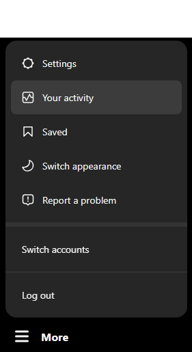
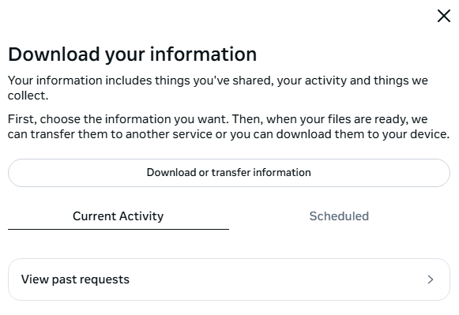
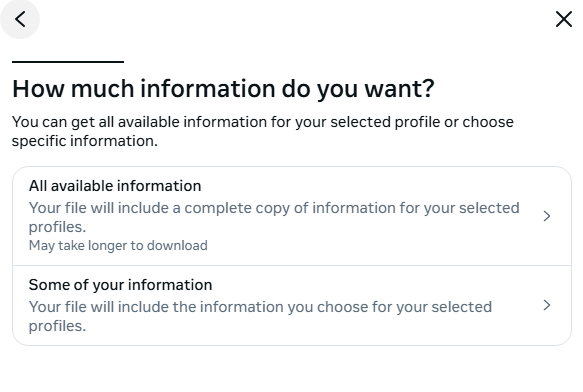

Find Fake Friends
Upload your Instagram zip file to see who doesn't follow you back.
-
On Instagram go to your profile, open the menu, then access "Your Activity".
 -
Tap on "Download Your Information", and click on the "Continue" button.

-
Click on "Download or transfer information".
 -
Now, select "Some of your information".
 -
Scroll down to "Connections" section and choose only "Followers and Following", and click on the "Next" button.

-
Select "Download to device" and press "Next".

-
Click on "Date range" and select "All time" and "Save". Click on "Format" and select "HTML". Finally, press "Create files."